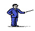

ЛЕКЦИЯ 7.
ПОИСК НА ЛИСПЕ. ФУНКЦИОНАЛЫ. СВОЙСТВА СИМВОЛОВ
Содержание
-
 7.1 Алгоритм поиска на Лиспе. (Функциональный подход к задаче о фермере,
волке, козе и капусте.)
7.1 Алгоритм поиска на Лиспе. (Функциональный подход к задаче о фермере,
волке, козе и капусте.)
-
7.2 Функционалы.
-
7.2.1 Отображающий функционал MAPCAR.
-
7.2.2 MAPCAR для нескольких списков.
-
7.3 Лямбда выражения.
-
7.4 Cвойства символов.
-
7.4.1 Чтение свойства.
-
7.4.2 Присвоение свойства.
-
7.4.3 Замена свойства.
-
7.4.4 Удаление свойства.
-
7.4.5 SYMBOL-PLIST.
Фермер (Farmer), волк (Wolf), козел (Goat) и капуста (Cabbidge)
находятся на одном берегу. Надо перебраться на другой берег на лодке.
- Лодка перевозит только двоих.
- Нельзя оставлять на одном берегу
козу и капусту, козу и волка.
Главная проблема в формировании алгоритма - найти эффективное представление структурой данных Лиспа информации о задаче.
Процесс перевозки может быть представлен последовательностью состояний.
Состояние представляется списком из четырех элементов, каждый
из которых отражает размещение объектов F, W, G, C:
(e w e w) - F, G на восточном берегу (e - east);
F W G C - W, C на западном берегу (w - west).
Определим две функции:
конструктор - make-state,
которая берет в качестве аргументов размещение F, W, G, C
и возвращает состояние
| 
|
(defun make-state (f w g c) (list f w g c))
|
и четыре функции доступа, каждая из которых берет состояние и возвращает размещение.
|
|
(defun farmer-side (state)
(nth 0 state))
(defun wolf-side (state)
(nth 1 state))
(defun goat-side (state)
(nth 2 state))
(defun cabbage-side (state)
(nth 3 state))
|
Оставшаяся программа основывается на этих функциях доступа и конструкторах.
В частности, они используются для реализации четырех возможных действий фермера:
- перевоз через реку или самого себя или W, G, C.
Эти функции используют четыре функции доступа для разбиения состояния
на его компоненты.
Функция opposite ( определена позже ) определяет новое размещение
объектов, которые пересекли реку, а make-state собирает их в новое
состояние.
Например, функция farmer-takes-self может быть определена:
|
|
(defun farmer-take-self (state)
(safe (make-state (opposite (farmer-side state))
(wolf-side state)
(goat-side state)
(cabbage-side state))))
|
Отметим, что эта функция возвращает новое состояние, независимо от
того, безопасно оно или нет. Однако могут быть опасные состояния:
например, когда W, G или G, C находятся на одном берегу.
Программа должна найти в качестве решения только безопасные состояния.
Проверка на опасные состояния должна производиться на разных
cтадиях программы. В нашем случае это можно сделать в функциях движения.
Реализуем это, используя функцию safe,
которая имеет следующее поведение:
* (safe '(w w w w)) ; состояние безопасно, возвращается без изменений
(w w w w)
Safe используется в каждой
функции перемещения для отфильтрования
опасных состояний. Таким образом, любое перемещение, которое ведет к
опасному состоянию будет возвращать nil вместо состояния. Алгоритм
формирования пути может проверять этот nil и использовать его для
избегания этого состояния.
Используя safe, будем иметь:
|
|
(defun farmer-take-wolf (state)
(cond ((equal (farmer-side state) (wolf-side state))
(safe (make-state (opposite (farmer-side state))
(opposite(wolf-side state))
(goat-side state)
(cabbage-side state))))
(t nil)))
|
Оставшиеся функции движения определяются аналогично, но включают
условный тест для определения, находятся ли фермер и предполагаемый
пассажир на одной и той же стороне реки. Если нет, то перемещение не
может быть сделано, то есть пассажир и фермер не находятся на одном
берегу, эта функция будет возвращать nil.
|
|
(defun farmer-take-goat (state)
(cond ((equal (farmer-side state) (goat-side state))
(safe (make-state (opposite (farmer-side state))
(wolf-side state)
(opposite(goat-side state))
(cabbage-side state))))
(t nil)))
|
|
|
(defun farmer-take-cabbage (state)
(cond ((equal (farmer-side state) (cabbage-side state))
(safe (make-state (opposite (farmer-side state))
(wolf-side state)
(goat-side state)
(opposite(cabbage-side state)))))
(t nil)))
|
Теперь можно определить функцию opposite, которая возвращает другую сторону.
|
|
(defun opposite (side)
(cond ((equal side 'e) 'w)
((equal side 'w) 'e)))
|
Safe определена с использованием
cond для проверки двух опасных
состояний: F находится на противоположном берегу от W, G, и от G и C.
Если состояние безопасно, оно будет возвращено без изменений.
|
|
(defun safe (state)
(cond ((and (equal (goat-side state) (wolf-side state))
(not (equal (farmer-side state) (wolf-side state)))) nil)
((and (equal (goat-side state) (cabbage-side state))
(not (equal (farmer-side state) (goat-side state)))) nil)
(t state)))
|
|
|
(defun path (state goal)
(cond ((equal state goal))
(t (or (path (farmer-takes-self state) goal)))
(path (farmer-take-wolf state) goal)
(path (farmer-take-goat state) goal)
(path (farmer-take-cabbage state) goal))
|
Эта версия функции path является простым переводом
и содержит несколько ошибок, которые надо исправить. В частности, отметим использование
формы OR для управления выполнением ее аргументов.
Напомним,что OR выполняет свои аргументы до тех пор,
пока один из них не вернет не-nil величину. Когда это
случается, OR завершается без выполнения других аргументов и возвращает это
не-nil, как результат.
Таким образом, OR используется не только как логический
оператор, но также обеспечивает способ управления поиском пути. OR
используется здесь вместо
cond, потому что величина, которая тестируется, и величина,
которая возвращается в случае не-nil, одна и та же.
Одна проблема с этим определением заключается в том,что функция перемещения может вернуть
значение nil, если перемещение не может быть
сделано, когда оно ведет не к безопасному состоянию, чтобы предотвратить
path от попытки генерировать дочерние состояния от состояния
nil, она ( path), должна сначала проверять,
является ли текущее состояние nil, если да, то
path должна вернуть nil.
Другая проблема,которая возникает в реализации path,
заключается в возможности возникновения петель в пространстве состояний. Если
данную реализацию path запустить, фермер будет ездить
взад-вперед между двумя берегами бесконечно, то есть алгоритм приведет к бесконечным
переходам между двумя одинаковыми состояниями.
Чтобы предотвратить это, в path надо ввести третий параметр,
been-list, список всех состояний, которые уже были достигнуты.
Каждый раз, когда path вызывается рекурсивно с новым
дочеpним состоянием, состояние-родитель должно быть добавлено в
been-list. Вставляя в path предикат
member, можно проверять, что текущее состояние не является
элементом been-list, то есть здесь поиск уже побывал. Это
выполняется проверкой текущего состояния, на присутствие в
been-list перед генерацией его наследников.
Path теперь определяется:
|
|
(defun path (state goal been-list)
(cond ((null state) nil)
((equal state goal) (reverse (cons state been-list)))
((not (member-lis state been-list ))
(or (path (farmer-take-self state) goal (cons state been-list))
(path (farmer-take-wolf state) goal (cons state been-list))
(path (farmer-take-goat state) goal (cons state been-list))
(path (farmer-take-cabbage state) goal (cons state been-list))))))
|
Функция member используется другая, так как
проверяется принадлежность элемента списку списков member-equal.
|
|
(defun member-lis (x lis)
(cond ((null lis) nil)
((equal x (car lis)) t)
(t (member-lis x (cdr lis)))))
|
Вместо того, чтобы вернуть t, можно вернуть
список состояний, которые были пройдены до достижения цели. Так как цель не содержится в
списке, она может быть вставлена, как последний элемент.
Перед тем, как вернуть список, его надо перевернуть, используя
reverse. Окончательно,чтобы параметр
been-list скрыть от пользователя,
может быть написана вызывающая функция, которая имеет два аргумента -
начальное и конечное состояния и вызывает path с пустым списком
been-list = nil.
|
|
(defun solve-fwgc (state goal) (path state goal nil))
|
Для решения можно использовать
|
|
(solve-fvgc '(w w w w) '(e e e e))
|
ответ:
|
|
| 1) w w w w | 5) w e w w
|
| 2) e w e w | 6) e e w e
| | 3) w w e w | 7) w e w e
| | 4) e e e w | 8) e e e e
|
|
До сих пор мы рассматривали функции, в качестве аргументов, которые использовали данные.
Например
|
|
* (add1 3) добавляет к аргументу 1
4
(defun add1 (x) (+ 1 x))
|
Однако, в качестве аргумента функции можно указывать и функцию.
Аргумент, значением которого является функция,
называют
функциональным аргументом , а функцию,
имеющую функциональный аргумент -
функционалом.
Различие между понятиями
"данные" и
" функция", определяются не на основе их структуры, а в зависимости от использования.
Если аргумент используется в функции, как
объект участвующий в вычислениях, то это данные..
Если аргумент используется как средство,
определяющее вычисления, то это функция.
Важный класс функционалов используемых
в лиспе -
отображающие функционалы (МАР функционалы)
МАР функционалы - функции, которые некоторым образом
отображают (map) список в новый список.
MAPCAR один из основных отображающих функционалов.
(MAPCAR f '(x1 x2 x3 ... xN))
MAPCAR функционал имеет два аргумента.
Первый аргумент - функция,
а второй - аргумент список.
|
Когда MAPCAR выполняется ,
функция определенная первым аргументом применяется к каждому элементу, списка,
определенному вторым аргументом и результат помещает (отображает) в новый список.
|
Пример,
|
|
* (mapcar 'add1 '( 1 2 3))
(2 3 4)
(MAPCAR f '(x1 x2 x3 ... xN))
эквивалентно
(list (f 'x1) (f 'x2) .... (f 'xN))
|
Можно использовать в функциях
|
|
(defun list-add1 (lis) (mapcar 'add1 lis))
* (list-add1 '(1 2 3))
(2 3 4)
|
В качестве аргумента для MAPCAR
может быть использовано значение символа
|
|
* (setq x '(a b (d)))
* (setq y 'atom)
* (mapcar y x)
(t t nil)
|
MAPCAR может обрабатывать больше списков, если
в функциональном аргументе несколько аргументов.
Например
|
|
* (defun addlist (l1 l2) (mapcar '+ l1 L2))
* (addlist '( 1 2 3) '(1 2 3))
(2 4 6)
т.е.
(list (+ 1 1) (+ 2 2) (+ 3 3))
|
Если списки разной длины, то длина результата
будет равна длине наименьшего.
Структура МАР функций ограничивает формы
отображаемых функций.
Так, если мы желаем получить список с элементами
|
|
x * x + 1
Мы должны определить функцию
(defun f1 (x) (+ 1 (* x x)))
* (mapcar 'f1 '(1 2 3))
|
Таким образом определяется специальная функция,
которая используется только в MAPCAR.
Аналогично происходит с add1.
Более эффективно в этом случае использовать,
т.н.
лямбда выражения:
|
|
(mapcar '(lambda (x) (+ 1 (* x x))) '(1 2 3))
сравни (defun f1 (x) (+ 1 (* x x)))
(mapcar '(lambda (x) (+ 1 x)) '(1 2 3))
|
Т.о. лямбда выражения позволяют определять
функцию внутри другой функции.
Лямбда-выражения определяют функцию не имеющую имени.
Общая форма:
(lambda (параметры) <тело функции>)
В лиспе с символом можно связывать, не только
значение, но и информацию, называемую списком
свойств (property list).
Например, рассмотрим информацию o Mary:
|
|
| aqe |
28 |
| occupation |
lawyer |
| salary |
90 |
| children |
Bill Alice Susan |
| свойство |
значение |
|
Список свойств в этом случае выглядит
(aqe 28 occupation lawyer salary 90 children ( Bill Alice Susan))
Узнать свойство атома можно используя функцию:
(GET <cимвол> <свойство>) возвращает значение
|
|
* ( get 'Mary 'age)
28
* ( get 'Mary 'children)
( Bill Alice Susan))
* ( get 'Mary 'hobby)
nil
|
Чтобы задать свойство необходимо использовать
обобщенную функцию присвоения
setf
( setf ( get <символ> <свойство>) <значение>)
|
|
* ( setf ( get 'Mary 'salary) 90)
90
|
Сначала свойство задается, а затем извлекается.
Мы поступили наоборот, хотя в нашем лиспе
присутствует функция
putprop:
( putprop <символ> <значение> <свойство>)
<свойство> - нечисловой атом;
<значение> - любое выражение ;
Можно определить
|
|
(defun
putprop ( atom value property)
(setf (get atom property) value))
|
и использовать при работе со списками.
Свойств у атома может быть много, но у каждого
только одно значение.
При внесении нового свойства, оно помещается
вначале списка свойств.
|
|
* (putprop 'Mary 'cinema 'hobby)
( hobby cinema .....)
|
Замена значения свойства производится
повторным присвоением.
Например,
|
|
(putprop 'mary 29 'age)
(get 'mary 'age)
|
Если возникает необходимость замены текущего значения
новым, используя при этом текущее, можно поступить
следующим образом:
|
|
(putprop 'mary (+ 1 (get 'mary 'age)) 'age)
|
Удаление свойства и его значения производится функцией
(remprop <символ> <свойство>)
SYMBOL-PLIST даст информацию о списке свойств
|
|
* ( SYMBOL-PLIST 'Mary)
(aqe 28 occupation lawyer salary 90 children ( Bill Alice Susan))
|